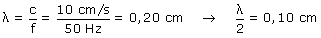
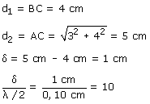
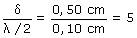

a)
Calculamos la semilongitud de onda:

Calculamos la diferencia de camino:
|
|
 |

La diferencia de camino es un múltiplo par de la semilongitud de onda. La interferencia es constructiva, se suman las amplitudes de las ondas dando una amplitud: 0.5 + 0.5 = 1 cm
b)
Si las distancias se reducen a la mitad la diferencia de camino será la mitad:

La diferencia de camino es un múltiplo impar de la semilongitud de onda. La interferencia es destructiva, se restan las amplitudes de las ondas dando una amplitud: 0.5 - 0.5 = 0